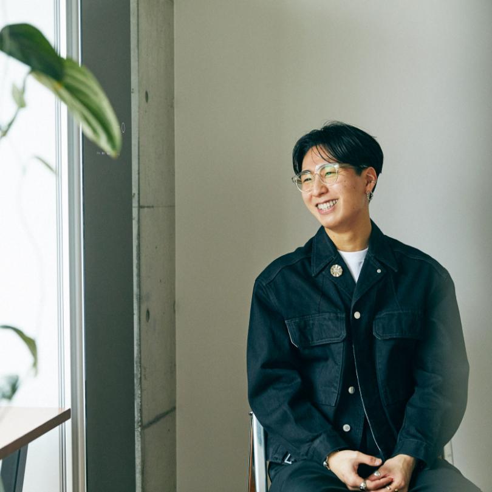
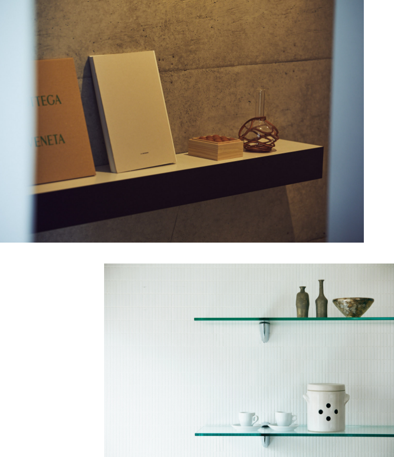
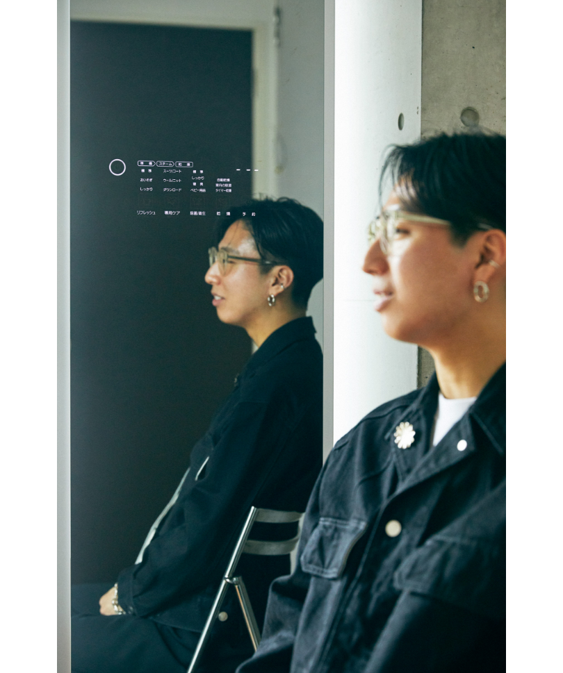
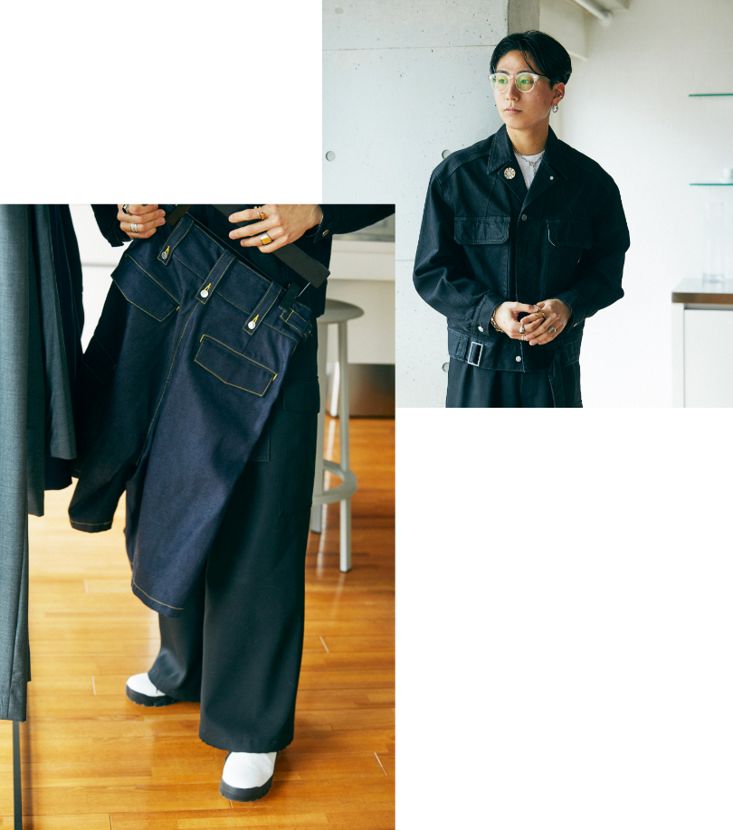
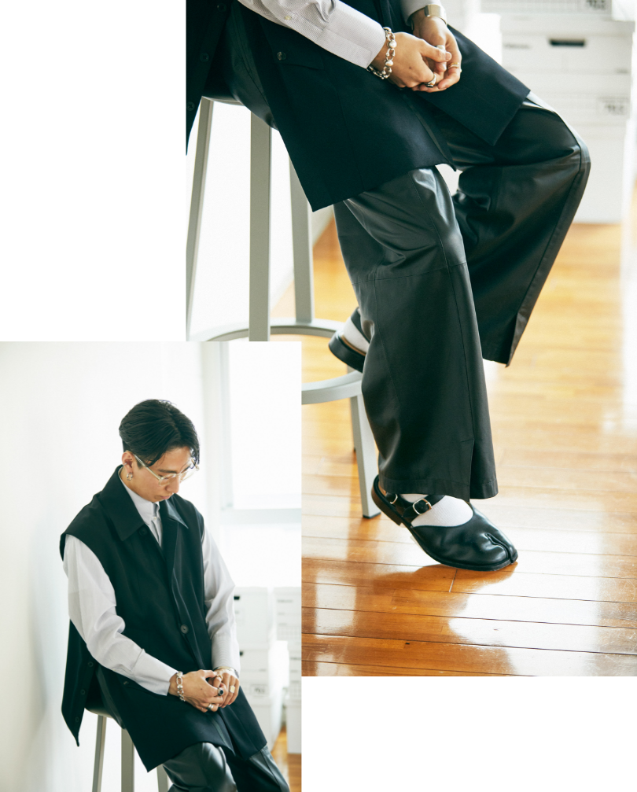
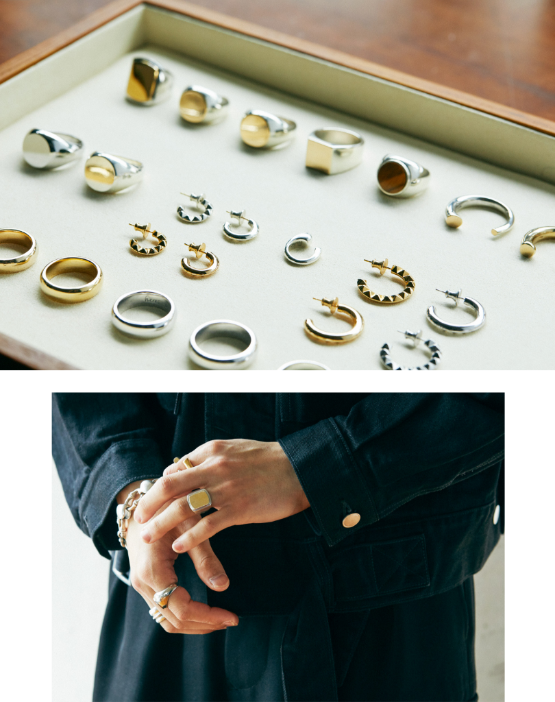
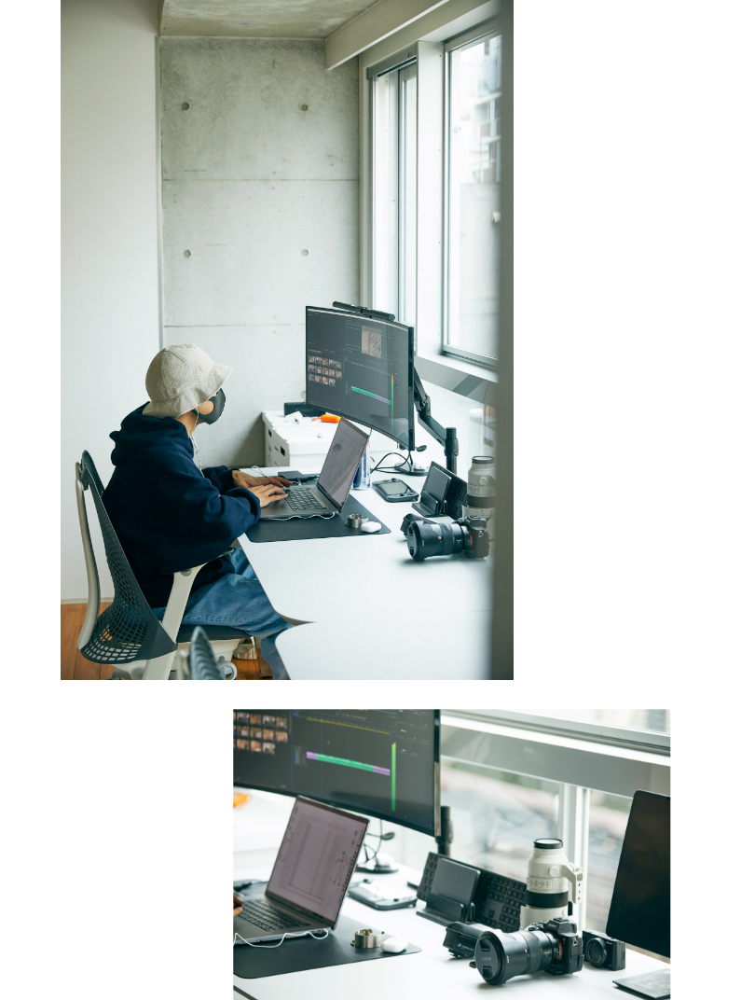
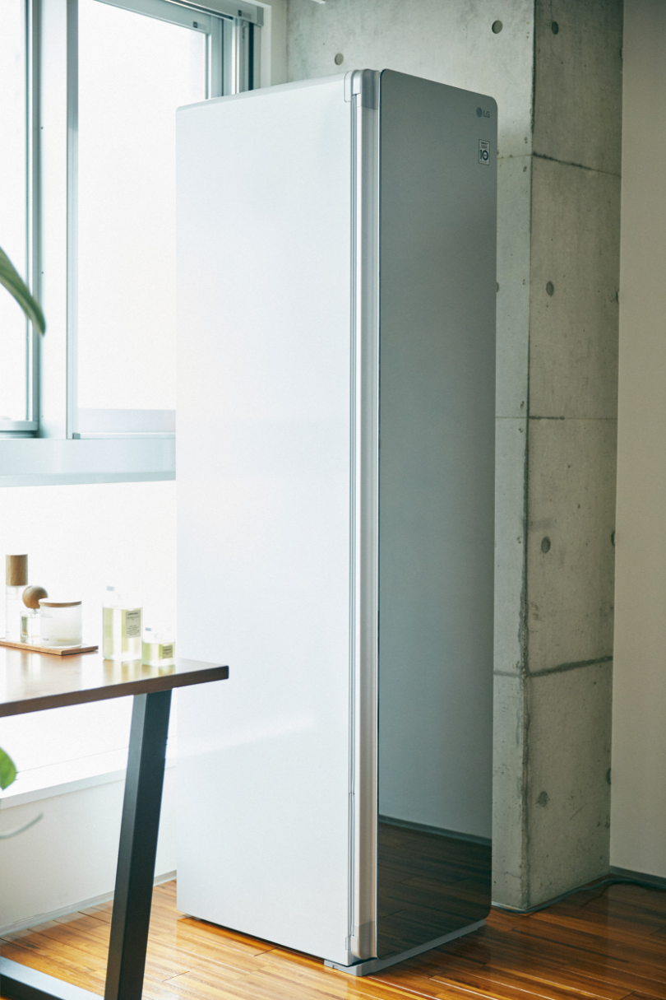
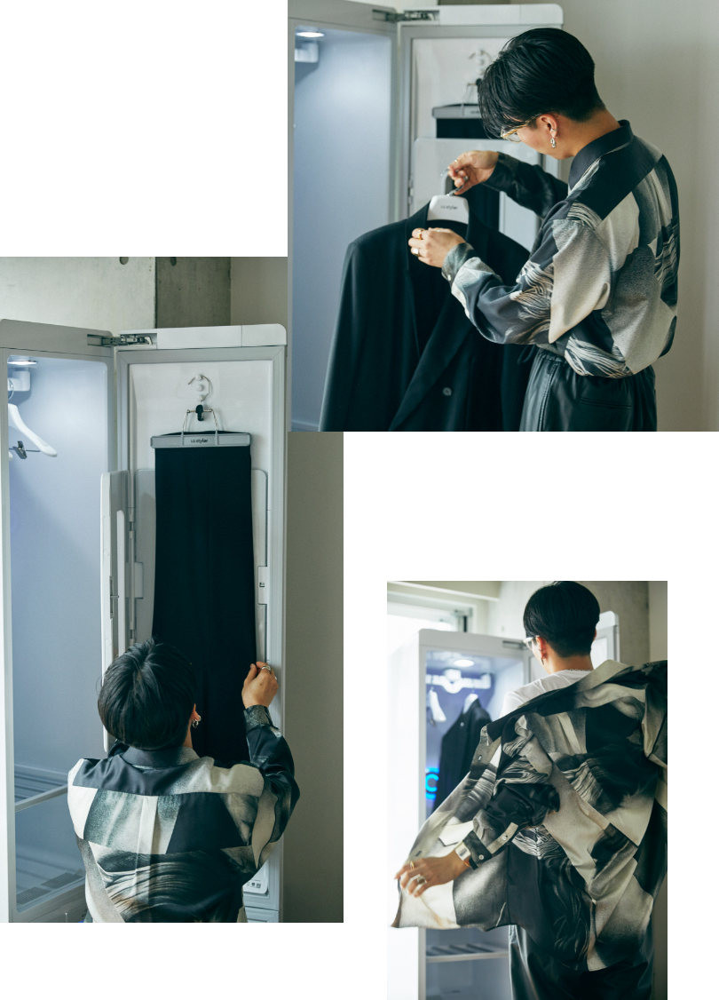

2022.05.02
SNSのフォロワーは20万人を超え、アクセサリーブランドの『h’erse』に続き一昨年にはアパレルブランド『SUBLATIONS』もローンチ。映像制作チーム〈プランβ〉を率い企業のコンサルティングも手がけるなど、マルチな活躍を続ける金山大成さん。
今の若者たちが理想とする働き方や暮らし方を実践するミレニアル世代の代弁者は、これまでどのような道を歩み、そして未来に向け何を思う？ 本人の言葉を追いながら彼の脳内をのぞいてみました。
今の若者たちが理想とする働き方や暮らし方を実践するミレニアル世代の代弁者は、これまでどのような道を歩み、そして未来に向け何を思う？ 本人の言葉を追いながら彼の脳内をのぞいてみました。

一昨年の独立後、オフィスを構える赤坂を拠点に様々な事業を展開している金山大成さんですが、その姿勢は常に謙虚。昨今の活躍に話題が及んでも「僕一人の力では何もできませんから」と謙遜しきりです。そんな彼が大切にしているのは、未知の世界でも“まずは飛び込んでみる”コト。そこで得た知見がクリエイションの端緒となっています。今季で３シーズン目を迎える『SUBLATIONS』もそのひとつ。

コンプレックスを個性へと昇華させる服
「親友の影響から洋服に興味を持ち始め、高校時代には週末の服屋巡りがもう日課。ただ、洋服は当時、コンプレックスをひた隠す鎧の役目も担っていたんです。太りやすい体質でその兆候はすぐに現れますし、小さい目もちょっと…もうコンプレックスの塊なんですよ（笑）。でも、おしゃれをしているとそれを個性と見てくれる人もいる。服の力は偉大だと思いました。それからですね。そんな洋服を作ってみたいと考えるようになったのは」

「そんな想いもブランドには反映されています。もともと生産やパターンを担当していた方と一緒にやっていて、僕はデジタル畑の経験が深い。そんな二人の関係性やモノ作りのコンセプトも含め『SUBLATIONS（相反する物を昇華する）』と名付けました。分かりやすいのはセクション２（同ブランドではシーズンをセクションと表現）のドレス＆ミリタリーのコレクションでしょうか。両者の中間はなんだろうと考え、僕らなりに表現しました」

「僕個人として好きなテイストはドレス。巷で売られているフレンチヴィンテージのキレイなジャケットなどは思わず見入っちゃいますし、その絶対的な美しさを要素としてコレクションに落とし込む場合が多いですね。特に重視するのが生地。店舗がない、いわゆるD2C方式での販売なので、お客様へダイレクトに商品が届く。ダンボールを開けた時に触れた印象はすごく大事だと思うんです。なので、一商品に対してスワッチを50〜100ぐらいは見ます」

ファッションを際立たせる名脇役として
「アパレルよりも先に展開していたのがアクセブランドの『h’eres』。実家に住んでいた時から着こなしを邪魔せず引き立てるアクセを探していましたが、欲しいものはウィメンズばかり。ならばいっそ作ってしまおうと趣味でアクセ作りを始めました。上京してもそのルーティーンは変わりませんでしたね。SNSの評判も良かったので、“ア リトル シンプルシティ（少しエッジの効いたシンプルなもの）”というコンセプトのもとブランド化しました」

ハブ的役割を担った先に見えた理想のカタチ
「『h’eres』の初期のシーズンビジュアルは、現在のプランβのメンバーが撮影してくれたもの。とある撮影でシンガポールへ行った際、お酒を酌み交わしながらみんなで夢を語り合ったんです。それを聞いて、なんとか彼らの才能を大きい舞台で発揮させたいと考え、自分の持ちうるプラットフォームで彼らの名を広めようと考えました。今では楽天ファッションウィークでランウェイの動画を担当したりなど、徐々に活動の幅やフィールドを広げています」

今後、海外支部も作りたいと金山さん。そのためNY在住の アートディレクターの知人に弟子入りを予定しているのだそ う。ちなみに最終目標は? 「夢はホテルを経営すること。雲をつかむような話ですが、 絶対に無理だとは思っていない。そのために、これからも後 悔しない選択をし続けたいと思っています」。
日々のストレスからの解放
「先ほども言ったように、僕はわりとドレス系のアイテムが好きで、シャツやスラックスをよく身につけます。そこにシワが入っていたりすると途端に印象は台無し。だから、ことさら服のシワには気を遣います（笑）。一ヶ月にだいたい20〜30着は定期的にクリーニングへ出していましたが、換算すると結構な金額にもなりますからちょっとしたストレスではありました」

「LG Stylerのおかげでそのストレスから解放されましたね。サクッと匂いを取りたい、簡単にシワをとりたいなんて時に、これ一台あればすべて解決できますから。一気にお金や時間のロスがなくなりました。友人からの焼肉の誘いも、以前は服に臭いがつくので嫌だなあとちょっと二の足を踏んでいましたけど、もうそんなことはなくなりましたね」

「しかも、アプリを通して専用コースをダウンロードすることで、服の素材などに即した機能が追加できる。カスタムによって使用の幅が広がるのは面白いですよね。さらにリモートでの操作も可能になるので、思いついた時にすぐアプローチできるのも嬉しい。個人的には、もう洗濯機と同じぐらい不可欠な存在になっています」
PROFILE
1994年生まれ。石川県出身。大学中退後、セレクトショップ、アーバンリサーチ 金沢店に勤務。副店長、店長を歴任後、上京し同社の販促部、デジタルマーケティング部にて活躍。その後、独立しONE FIVEを設立する。現在は、ジュエリーブランド『h’eres』、アパレルブランド『SUBLATIONS』をディレクションしながら、映像制作、ブランドやアイテムのコンサルティングなどを手がける。
Interview CATAL DESIGN